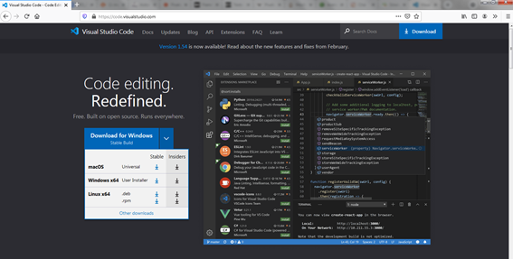
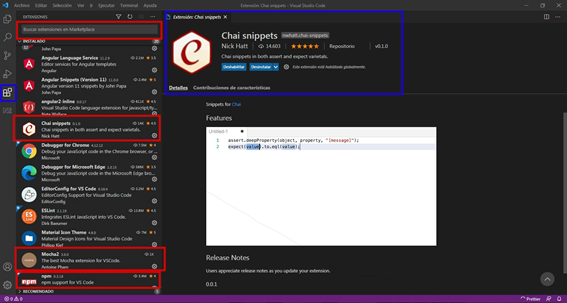
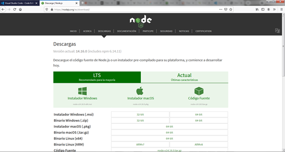
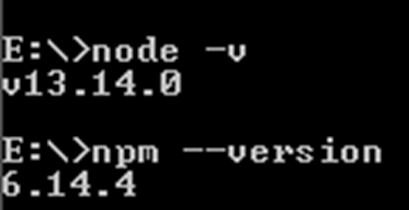
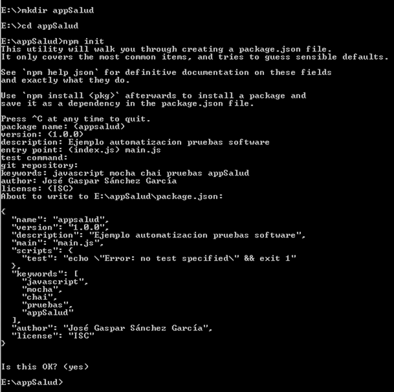
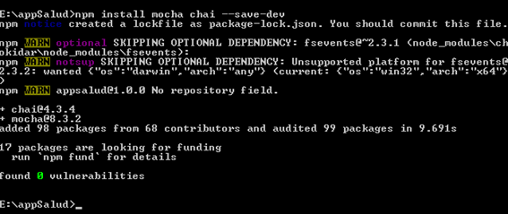

UD 1. Prueba de aplicaciones web y para dispositivos móviles
A.- Preparando el entorno
1.- Instalación y preparación del entorno de desarrollo
Para la realización de esta práctica puede utilizarse cualquier entorno de desarrollo integrado (IDE), sin embargo se emplea como ejemplo Visual Studio Code, dadas las enormes posibilidades que ofrece a programadores y testers.

En primer lugar, se debe descargar e instalar Visual Studio Code (https://code.visualstudio.com/).
Una vez descargado e instalado el entorno es necesario prepararlo instalando los plugins más adecuados para el trabajo a realizar: chai snippets, mocha2, npm, ...

2.- Instalación del framework Node.js
En segundo lugar, se debe instalar el entorno de ejecución Node.js, disponible a través de la siguiente web: https://nodejs.org/es/

Para ejecutar NPM, vamos a necesitar instalar primero Node.js (versión LTS), ya que NPM forma parte de Node. Node permite la ejecución de aplicaciones JavaScript en el servidor usando el motor v8 (Chrome), por lo que podemos crear aplicaciones tanto de cliente como de servidor con un único lenguaje → JavaScript.
Una vez que tengamos Node instalado, podemos comprobar si se ha instalado correctamente desde la línea de comandos ejecutando: node -v, y npm --version.

3.- Creación de un nuevo proyecto
El objetivo de esta práctica es mostrar cómo es posible automatizar la realización de las pruebas unitarias, las pruebas de integración y cómo sería posible aplicar pruebas de regresión cuando se introducen cambios en la aplicación todo ello gracias a las posibilidades que nos ofrecen las herramientas de automatización.
Para ello se propone crear una pequeña aplicación médica para controlar el peso, talla e Índice de Masa Corporal de los pacientes.
Es necesario crear un nuevo proyecto Node.js, previamente hay que crear un nuevo directorio (appSalud); moverse al interior de dicho directorio y ejecutar el comando npm init.

Tras la ejecución del comando npm init se preguntará alguna información relevante del proyecto a crear, esta información se incorporará al archivo package.json. Es posible personalizar dichos valores o adoptar aquellos vienen por defecto (dejando los campos vacíos y presionado ENTER). Una vez creado el archivo se muestra su contenido para revisión y aceptación.
4.- Incluyendo las dependencias en package.json
A continuación, hace falta instalar las dependencias que serán necesarias para desarrollar el proyecto. En primer lugar, se instalarán las dependencias de desarrollo (mocha y chai) que nos permitirán crear y ejecutar test de pruebas para el código Javascript: npm install mocha chai --save-dev o npm install mocha chai -D.
